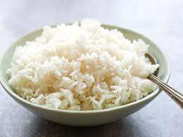

Cooked Rice

Cooked Rice
Ingredients
Directions
- Put amount of cups desired into bowl
- Wash and rinse with cold water
- Once cloudy, rinse water
- Repeat 2 more times
- Put amount of water in cups in proportion to amount of rice in cups "1:1 ratio"
- Cook for 30-45 minutes
- When finished cooking stir up rice and check for quality